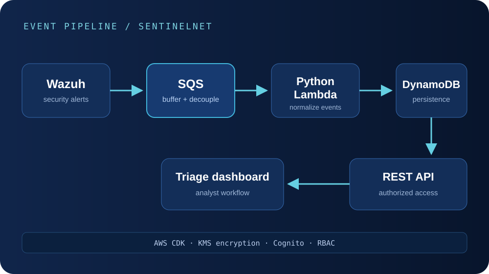

Case study 03
SentinelNet
An event-driven AWS system that turns Wazuh alerts into normalized, queryable records for an authorized security-triage workflow.

Problem
Security alerts need a durable path from ingestion to triage.
Raw alerts are useful only if they reach analysts in a consistent, queryable form. Directly coupling Wazuh to synchronous processing would make bursts, downstream failures, and retries harder to manage. The system needed to buffer incoming telemetry, normalize it, persist it, and make it available through an authenticated interface.
SentinelNet treats alert ingestion as a data pipeline rather than a single request. That creates explicit places to absorb load, transform records, enforce access, and observe failures.
Architecture
Decouple producers, processing, persistence, and consumers.
Wazuh produces security alerts. Amazon SQS buffers those events and separates ingestion rate from processing rate. A Python Lambda function consumes messages, transforms and normalizes the records, and writes them to DynamoDB. A REST API provides authorized access for the triage dashboard.
Cross-cutting controls include KMS-backed encryption, Cognito identity, group-based role access, and API authorization. AWS CDK defines the infrastructure so environments can be reviewed and provisioned from code.
What I personally owned
The backend ingestion path and repeatable cloud infrastructure.
- Engineered the Wazuh-to-SQS-to-Lambda ingestion flow.
- Implemented Python transformations before persistence in DynamoDB.
- Defined backend infrastructure with AWS CDK in Python.
- Integrated KMS encryption, Cognito group-based access, role-based access control, and API authorization.
- Validated end-to-end event processing against hundreds of alerts.
Implementation
Use managed services to isolate responsibilities.
Queue-backed ingestion
SQS is the boundary between event production and event processing. Wazuh can continue producing messages while Lambda scales independently, and a failed processing attempt does not require the producer to know how downstream storage works.
Transformation and persistence
The Lambda layer turns incoming records into a consistent application shape before writing to DynamoDB. Centralizing normalization prevents dashboard and API consumers from repeatedly interpreting raw alert formats.
Infrastructure as code
AWS CDK expresses queues, compute, storage, encryption, identity, and authorization as versionable Python code. This makes architecture changes reviewable, reduces manual configuration drift, and turns environment recreation into an engineering process rather than a checklist.
Technical challenges
Event systems have to define failure behavior, not just the happy path.
- Bursty ingestion: alert volume can change much faster than a synchronous consumer can safely absorb.
- Duplicate delivery: queue-based systems should expect retries and design processing with idempotency in mind.
- Poison messages: malformed or unexpected records need a recoverable path instead of blocking useful work.
- Schema consistency: security events vary, so the normalization layer must preserve evidence while providing stable fields.
- Least privilege: each Lambda, API, user group, and storage path should receive only the permissions it needs.
- Environment repeatability: manual cloud setup is difficult to audit and easy to drift.
Decisions & tradeoffs
Why an event-driven architecture fit the workload.
- SQS over direct invocation: adds queue management and eventual consistency, but absorbs bursts and separates producer health from consumer health.
- Lambda over a persistent service: reduces server operations and scales with events, while introducing runtime limits and cold-start considerations.
- DynamoDB over a relational store: supports managed, scalable event persistence when access patterns are known, but demands deliberate key and query design.
- CDK over console configuration: requires code and deployment discipline, but creates a reviewable, repeatable environment.
- Cognito + RBAC: adds identity configuration, but makes analyst access explicit rather than relying on an unprotected dashboard.
Results / metrics
Validated with real alert volume, without overstating scale.
- The complete pipeline was validated against hundreds of security alerts.
- Alert production, transformation, persistence, and dashboard access are separated into independently understandable components.
- Infrastructure definitions cover core AWS resources and security controls rather than relying on undocumented console setup.
What I learned
Reliability comes from designing the boundaries.
The central design decision was not a specific AWS service; it was separating ingestion from processing and processing from consumption. Once those boundaries were explicit, buffering, retries, access control, and observability had a clear place in the system.
Infrastructure as code also changed how I evaluated the backend. Security policies and resource relationships became part of the implementation that could be read and reviewed—not invisible state in a cloud console.
Source / demo / external evidence
Review the public SentinelNet repository.
The project source is publicly available on GitHub, including the implementation and infrastructure supporting the event-driven security-alert pipeline.
Related work